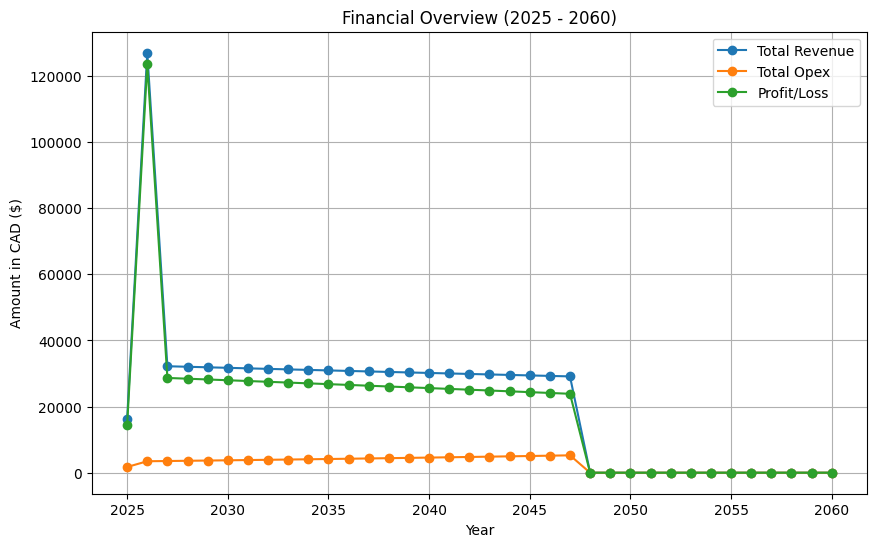
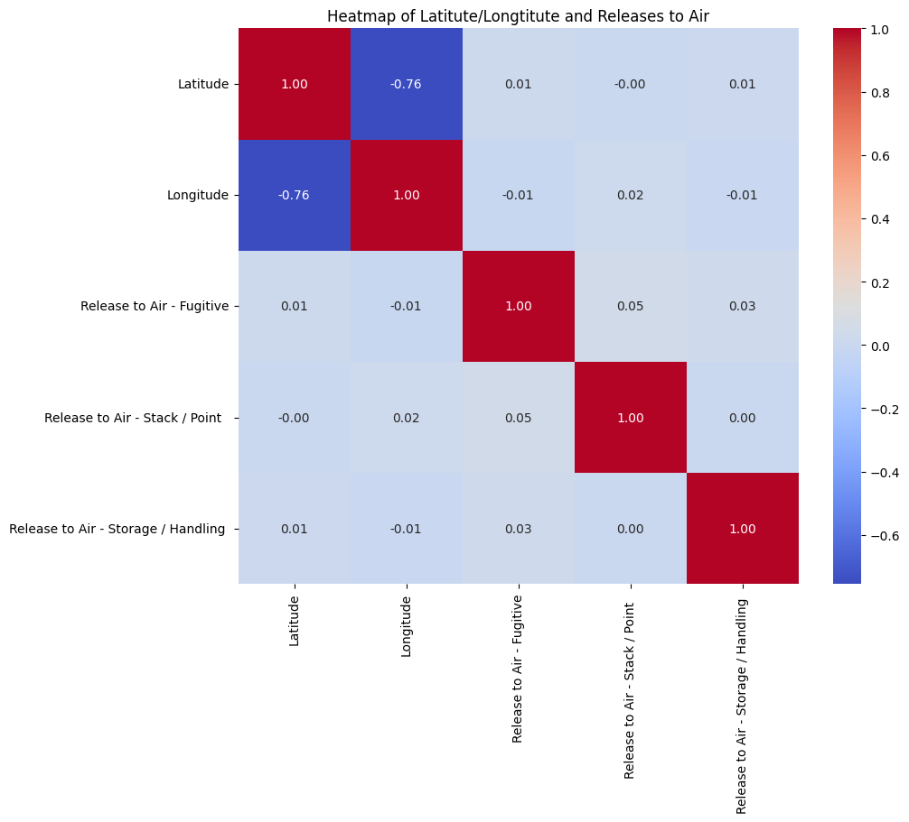
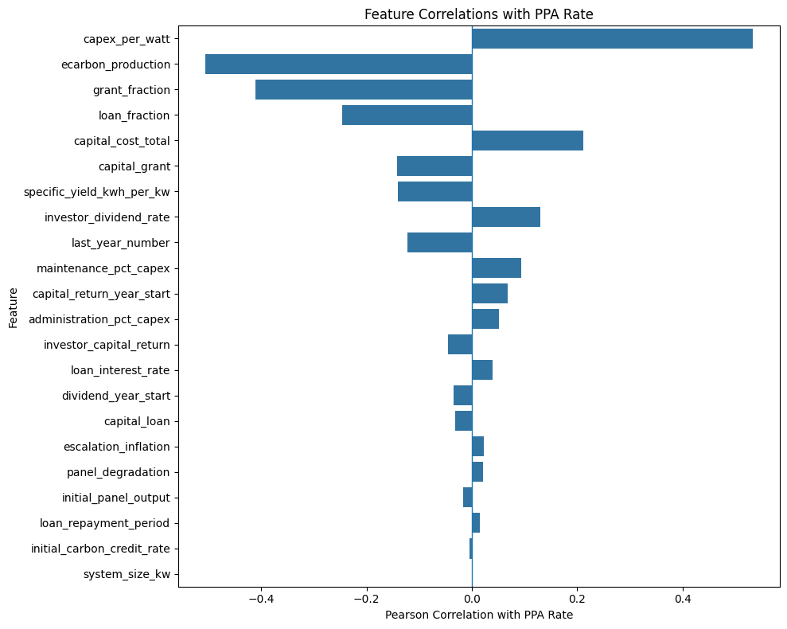
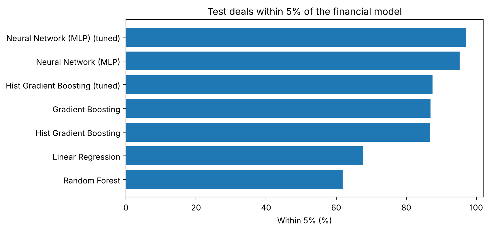
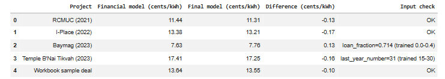

Exploratory Data Analysis
Exploring data distributions, relationships, patterns and potential data quality issues.
CMPT 3835 | WORK INTEGRATED LEARNING II
Applied Machine Learning | Renewable Energy
NorQuest College | Team GREEN
Back to PortfolioThis collaborative project explores the application of machine learning to renewable energy pricing. The objective is to support business decision-making through data analysis, predictive modelling and optimization.
Energy pricing involves complex financial calculations and multiple business variables. Our project explores how machine learning can simplify the pricing process and provide faster predictive insights.
As a member of Team GREEN, I contributed to problem scoping, exploratory data analysis, feature engineering and collaborative model development activities.
Exploring data distributions, relationships, patterns and potential data quality issues.
Preparing data for machine learning and identifying potential inconsistencies.
Developing meaningful input features to support predictive modelling.
Training and comparing machine learning models for energy pricing prediction.
Exploring hyperparameter optimization to improve predictive performance.
Assessing predictive accuracy and evaluating model limitations.
The project includes four Jupyter Notebooks covering exploratory data analysis, feature engineering, model training and optimization.





Machine learning predictions depend on the quality and representativeness of training data. Strong model performance does not guarantee equivalent accuracy in real-world situations.
Throughout the project, our team collaborated on technical tasks, discussed project requirements, shared progress updates and worked together to address project challenges.
This project helped me understand how machine learning can be connected to business requirements. It also strengthened my understanding of data preparation, predictive modelling, teamwork and responsible decision-making.
My next goal is to improve my skills in model deployment, interpretability and the development of user-friendly machine learning applications.